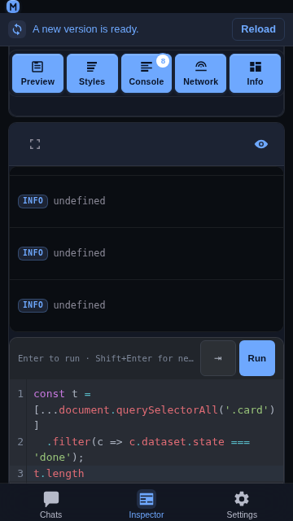

Inspector JavaScript console
Overview
The Console panel of the Inspector ends with a small JavaScript
console: a CodeMirror editor whose contents are evaluated in the inspected
page over the same CDP connection the log rows arrive on. It is the only
Inspector surface that is typed into, and it is designed for a phone first —
a soft keyboard, one hand, and a card that shares the screen with the log
above it.

Usage
Open the Inspector tab, connect to a target, and switch on the
Console panel.Type an expression in the editor below the log.
Press Ctrl + Enter (or Cmd + Enter) to evaluate it in the
page. The result is appended to the console log as a new row, sharing the
log's stream, and the editor is emptied so the next entry starts clean.
document.querySelectorAll('.card').lengthEnter inserts a newline; the evaluate shortcut is the modifier form. A
console entry is often several lines, and Enter is the one key a phone's soft
keyboard is guaranteed to have — so Enter belongs to the text, exactly as it
does in the chat composer. The desktop DevTools console evaluates on bare
Enter because it is typed on a hardware keyboard; that binding would make a
multi-line entry impossible on touch.
| Action | Binding |
|---|---|
| Evaluate | Ctrl / Cmd + Enter |
| New line (indented) | Enter or Shift + Enter |
| Indent | Tab, or the strip's ↵ button |
| Autocomplete | Ctrl + Space, or just type |
| Recall the previous entry | ↑ / ↓ |
The editor is one line tall when it is empty and grows with what has been
typed, up to about a third of the viewport; beyond that it scrolls. The strip
carries a single ↵ button — the newline-with-indent a soft keyboard cannot
type — beside the hint.
Autocomplete
Suggestions come from three layers, merged into one picker:
a curated list of browser globals and console command-line helpers
($0,$$,copy,inspect, …);a live snapshot of the page's own globals, fetched once per editor and
property-completed on demand (Runtime.getProperties);element references — every
idon the page, so#footargets appear by
name.Inside a property position (
document.) the picker asks the page for that
object's own property names, which costs one CDP round-trip per completion
rather than one per keystroke.
Behavior
The evaluation runs in the page, not in the app:
Runtime.evaluatewith
includeCommandLineAPI: true, so$0,$$,copyandinspectbehave as
they do in the desktop console.Results land in the log. An evaluated expression is appended as a
console row, so it scrolls, expands, and can be sent to a chat draft exactly
like aconsole.logfrom the page.A whitespace-only entry is not sent:
Ctrl+Enterleaves the box
untouched rather than clearing it.The card is content-sized. An empty console is one line of editor under
the strip; a five-line expression is five. Nothing is reserved for a
keyboard the user has not opened.The cap lives on the scroll container. When the expression grows past a
third of the viewport the editor itself scrolls, so the caret line stays
reachable and the log above keeps its share of the card.The strip never loses an action. The keyboard hint ellipsizes on a narrow
phone while the two buttons keep their 44 × 44 px targets; nothing is pushed
off the card.
Related
Inspector — the tab, its panels, and the console log.
Inspector full screen — one panel over the whole viewport.
Add Inspector entries to a chat — sending an evaluated row to a draft.
Content Security Policy — why
style-srckeeps'unsafe-inline'for CodeMirror.